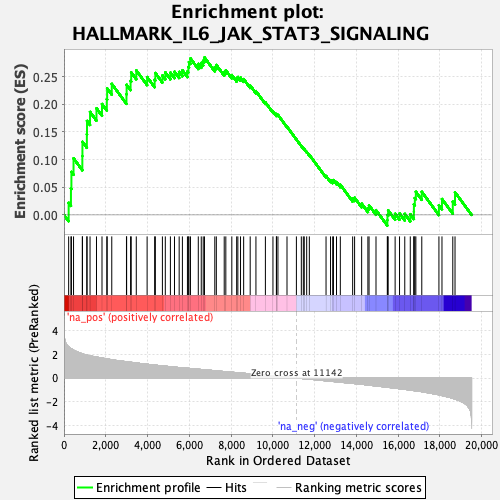

| | | Dataset | CK_basal |
| Phenotype | NoPhenotypeAvailable |
| Upregulated in class | na_pos |
| GeneSet | HALLMARK_IL6_JAK_STAT3_SIGNALING |
| Enrichment Score (ES) | 0.28458816 |
| Normalized Enrichment Score (NES) | 1.199584 |
| Nominal p-value | 0.1624161 |
| FDR q-value | 0.35787377 |
| FWER p-Value | 0.997 |
Table: GSEA Results Summary

Fig 1: Enrichment plot: HALLMARK_IL6_JAK_STAT3_SIGNALING
Profile of the Running ES Score & Positions of GeneSet Members on the Rank Ordered List
| SYMBOL | RANK IN GENE LIST | RANK METRIC SCORE | RUNNING ES | CORE ENRICHMENT | | 1 | LTB | 223 | 2.626 | 0.0218 | Yes |
| 2 | TNF | 333 | 2.479 | 0.0477 | Yes |
| 3 | DNTT | 355 | 2.456 | 0.0777 | Yes |
| 4 | CCL7 | 457 | 2.345 | 0.1023 | Yes |
| 5 | IL1R1 | 879 | 2.037 | 0.1064 | Yes |
| 6 | CD14 | 883 | 2.035 | 0.1321 | Yes |
| 7 | PF4 | 1095 | 1.929 | 0.1457 | Yes |
| 8 | LTBR | 1102 | 1.927 | 0.1698 | Yes |
| 9 | STAM2 | 1247 | 1.867 | 0.1861 | Yes |
| 10 | TNFRSF12A | 1556 | 1.765 | 0.1926 | Yes |
| 11 | TNFRSF21 | 1820 | 1.681 | 0.2004 | Yes |
| 12 | IL17RA | 2052 | 1.613 | 0.2090 | Yes |
| 13 | ITGB3 | 2067 | 1.608 | 0.2287 | Yes |
| 14 | IFNGR1 | 2288 | 1.537 | 0.2368 | Yes |
| 15 | SOCS1 | 2992 | 1.372 | 0.2181 | Yes |
| 16 | CD38 | 3000 | 1.371 | 0.2351 | Yes |
| 17 | CD9 | 3189 | 1.328 | 0.2423 | Yes |
| 18 | CXCL3 | 3219 | 1.321 | 0.2575 | Yes |
| 19 | IL12RB1 | 3462 | 1.267 | 0.2611 | Yes |
| 20 | IL1B | 3981 | 1.157 | 0.2492 | Yes |
| 21 | HMOX1 | 4342 | 1.086 | 0.2444 | Yes |
| 22 | PTPN2 | 4375 | 1.078 | 0.2564 | Yes |
| 23 | CSF2RB | 4713 | 1.022 | 0.2521 | Yes |
| 24 | IL3RA | 4852 | 0.994 | 0.2576 | Yes |
| 25 | STAT2 | 5096 | 0.954 | 0.2572 | Yes |
| 26 | CSF3R | 5292 | 0.919 | 0.2588 | Yes |
| 27 | FAS | 5516 | 0.879 | 0.2585 | Yes |
| 28 | REG1A | 5671 | 0.854 | 0.2614 | Yes |
| 29 | ACVR1B | 5912 | 0.819 | 0.2594 | Yes |
| 30 | TYK2 | 5956 | 0.813 | 0.2675 | Yes |
| 31 | IL17RB | 5986 | 0.809 | 0.2763 | Yes |
| 32 | IL9R | 6057 | 0.799 | 0.2828 | Yes |
| 33 | PDGFC | 6432 | 0.737 | 0.2729 | Yes |
| 34 | CRLF2 | 6574 | 0.716 | 0.2747 | Yes |
| 35 | INHBE | 6668 | 0.699 | 0.2788 | Yes |
| 36 | ITGA4 | 6728 | 0.694 | 0.2846 | Yes |
| 37 | IFNAR1 | 7223 | 0.617 | 0.2670 | No |
| 38 | CSF2 | 7296 | 0.604 | 0.2709 | No |
| 39 | EBI3 | 7674 | 0.542 | 0.2584 | No |
| 40 | IL1R2 | 7751 | 0.530 | 0.2612 | No |
| 41 | JUN | 8038 | 0.488 | 0.2527 | No |
| 42 | IL4R | 8270 | 0.449 | 0.2465 | No |
| 43 | SOCS3 | 8327 | 0.440 | 0.2492 | No |
| 44 | PIM1 | 8455 | 0.422 | 0.2480 | No |
| 45 | CNTFR | 8605 | 0.398 | 0.2454 | No |
| 46 | TLR2 | 8918 | 0.352 | 0.2338 | No |
| 47 | BAK1 | 9193 | 0.307 | 0.2236 | No |
| 48 | IL10RB | 9646 | 0.235 | 0.2034 | No |
| 49 | ACVRL1 | 10008 | 0.181 | 0.1871 | No |
| 50 | MYD88 | 10173 | 0.155 | 0.1806 | No |
| 51 | CXCL10 | 10177 | 0.155 | 0.1824 | No |
| 52 | IRF9 | 10247 | 0.144 | 0.1807 | No |
| 53 | CSF2RA | 10681 | 0.075 | 0.1594 | No |
| 54 | IL7 | 11131 | 0.002 | 0.1363 | No |
| 55 | CXCL11 | 11367 | -0.035 | 0.1246 | No |
| 56 | TGFB1 | 11462 | -0.050 | 0.1204 | No |
| 57 | CXCL13 | 11507 | -0.056 | 0.1189 | No |
| 58 | GRB2 | 11624 | -0.073 | 0.1138 | No |
| 59 | IL2RA | 11751 | -0.093 | 0.1085 | No |
| 60 | IL13RA1 | 12551 | -0.230 | 0.0703 | No |
| 61 | CD44 | 12766 | -0.267 | 0.0627 | No |
| 62 | IFNGR2 | 12871 | -0.286 | 0.0610 | No |
| 63 | IL18R1 | 12906 | -0.291 | 0.0629 | No |
| 64 | CXCL1 | 13053 | -0.315 | 0.0594 | No |
| 65 | PTPN1 | 13235 | -0.347 | 0.0545 | No |
| 66 | CD36 | 13826 | -0.448 | 0.0298 | No |
| 67 | HAX1 | 13919 | -0.466 | 0.0310 | No |
| 68 | OSMR | 14257 | -0.526 | 0.0203 | No |
| 69 | TNFRSF1B | 14556 | -0.586 | 0.0124 | No |
| 70 | IRF1 | 14611 | -0.597 | 0.0172 | No |
| 71 | STAT3 | 14944 | -0.664 | 0.0086 | No |
| 72 | IL6 | 15487 | -0.773 | -0.0095 | No |
| 73 | IL2RG | 15493 | -0.775 | 0.0001 | No |
| 74 | CCR1 | 15527 | -0.783 | 0.0083 | No |
| 75 | PLA2G2A | 15860 | -0.858 | 0.0021 | No |
| 76 | PTPN11 | 16071 | -0.900 | 0.0027 | No |
| 77 | MAP3K8 | 16322 | -0.951 | 0.0019 | No |
| 78 | IL15RA | 16586 | -1.016 | 0.0013 | No |
| 79 | CBL | 16758 | -1.056 | 0.0059 | No |
| 80 | CSF1 | 16760 | -1.057 | 0.0192 | No |
| 81 | LEPR | 16804 | -1.070 | 0.0306 | No |
| 82 | CXCL9 | 16853 | -1.082 | 0.0418 | No |
| 83 | STAT1 | 17137 | -1.146 | 0.0418 | No |
| 84 | PIK3R5 | 17958 | -1.412 | 0.0175 | No |
| 85 | A2M | 18104 | -1.476 | 0.0288 | No |
| 86 | IL6ST | 18622 | -1.712 | 0.0239 | No |
| 87 | TNFRSF1A | 18729 | -1.773 | 0.0409 | No |
Table: GSEA details [plain text format]
Fig 2: HALLMARK_IL6_JAK_STAT3_SIGNALING: Random ES distribution
Gene set null distribution of ES for HALLMARK_IL6_JAK_STAT3_SIGNALING